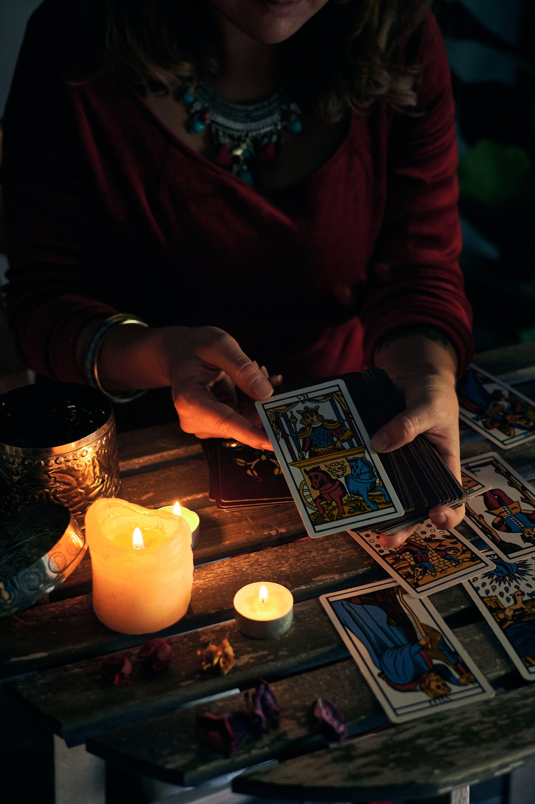
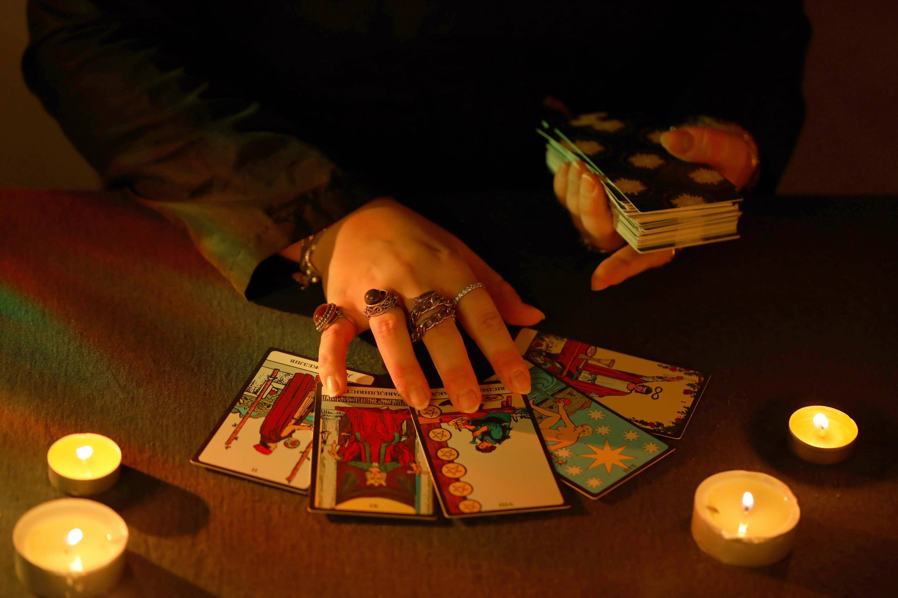
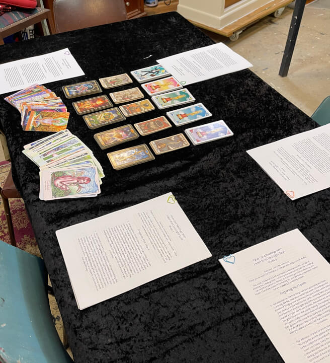

Claridad para tu presente
✦ Silvana · Medium & Tarot
Guía tu camino.
Iluminá tu destino.
Conectá con tu alma y recibí las respuestas que necesitás a través del tarot, la canalización y la percepción espiritual.
◉ Turnos e inscripciones coordinados personalmente por WhatsApp

Lectura de tarot✦Canalización☾Videncia✦Mediumnidad☾Cursos✦
Formas de acompañarte
Un mensaje puede abrir
una nueva mirada.
Cada encuentro parte de tu pregunta y de lo que hoy necesitás comprender. Elegí el servicio que más resuene con vos.
Consultar ↗
Conexión espiritual
Canalización
Mensajes del plano espiritual orientados a tu evolución, comprensión y proceso personal.Percepción e intuición
Videncia
Una lectura sensible de aquello que no se ve a simple vista para iluminar tus decisiones.Puentes y mensajes
Mediumnidad
Un espacio cuidado de conexión y escucha para recibir mensajes desde el plano espiritual.Las consultas ofrecen orientación espiritual y no reemplazan atención médica, psicológica, legal ni financiera.

SilvanaMedium · Tarot
Sobre mí
Una guía cercana para volver a escuchar tu propia voz.
Soy Silvana, tarotista y médium. Acompaño procesos de búsqueda personal desde la escucha, la intuición y el respeto por cada historia.
Mi intención es ofrecerte un espacio donde puedas detenerte, ordenar lo que sentís y recibir una mirada que te ayude a avanzar con más claridad. No se trata de decidir por vos, sino de iluminar aquello que quizás hoy no podés ver.
“El mensaje llega para abrir caminos, no para limitarte.”Conversemos por WhatsApp ↗
Tu consulta
Un encuentro simple,
personal y cuidado.
No necesitás entender de tarot ni saber exactamente qué preguntar. Solo contarme qué te trae hasta acá.
- 01Escribime
Contame por WhatsApp qué tipo de consulta te interesa o qué situación querés trabajar.
- 02Coordinamos
Te explico cómo es el encuentro, resolvemos tus dudas y elegimos un momento para la sesión.
- 03Recibí tu lectura
Nos encontramos en un espacio enfocado en tu pregunta, tu energía y el mensaje que necesites.
Elegí tu consulta
¿Qué querés iluminar hoy?
Seleccioná una opción y te llevo a WhatsApp con tu consulta ya preparada.
Continuar por WhatsApp ↗
Sin formularios complicados. Silvana te responde personalmente.
Aprender y transformar
Cursos para despertar
tu propia intuición.
Espacios para aprender, practicar y acercarte al lenguaje del tarot desde una mirada consciente.
Consultá por las próximas fechas, modalidades y formas de inscripción. Silvana te envía toda la información directamente por WhatsApp.
✦ Información de próximas ediciones✦ Inscripción y consultas personalizadas✦ Acompañamiento durante el proceso
Quiero conocer los cursos ↗

Experiencias
Palabras después
del encuentro.
Cada lectura se vive de una manera distinta. Estas frases muestran cómo podría presentarse la experiencia de quienes consultan.
Me fui con una mirada mucho más clara sobre lo que estaba atravesando. Sentí respeto, escucha y mucha calma durante toda la consulta.
El mensaje llegó en el momento justo. No sentí que me dijeran qué hacer, sino que pude reconocer algo que ya estaba dentro mío.
Silvana explica con mucha sensibilidad. La sesión fue cálida y me ayudó a ordenar emociones que tenía mezcladas.
Testimonios ilustrativos para esta demostración. Se reemplazan por experiencias reales antes de publicar.
¿Necesito saber de tarot para consultar?+
No. Solo necesitás traer tu inquietud o aquello que quieras comprender. Silvana te guía durante todo el encuentro.
¿Cómo reservo un turno?+
Elegí el servicio que te interesa y escribí por WhatsApp. Allí coordinan personalmente la modalidad, el día y el horario.
¿Puedo consultar por más de un tema?+
Podés contarle a Silvana qué necesitás trabajar para que te indique qué tipo de encuentro puede resultarte más adecuado.
¿Cómo me inscribo a los cursos?+
Pedí por WhatsApp la información de próximas ediciones. Vas a recibir fechas, modalidad y pasos para inscribirte.
¿Una lectura predice exactamente el futuro?+
El tarot se presenta como una herramienta de orientación y reflexión. No determina decisiones ni reemplaza asesoramiento profesional.
Conectá con tu alma